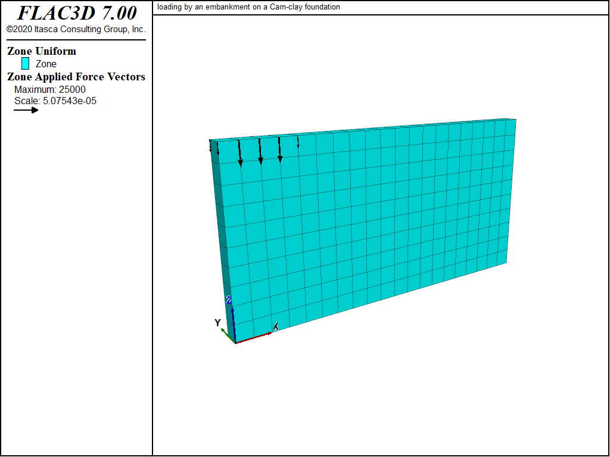
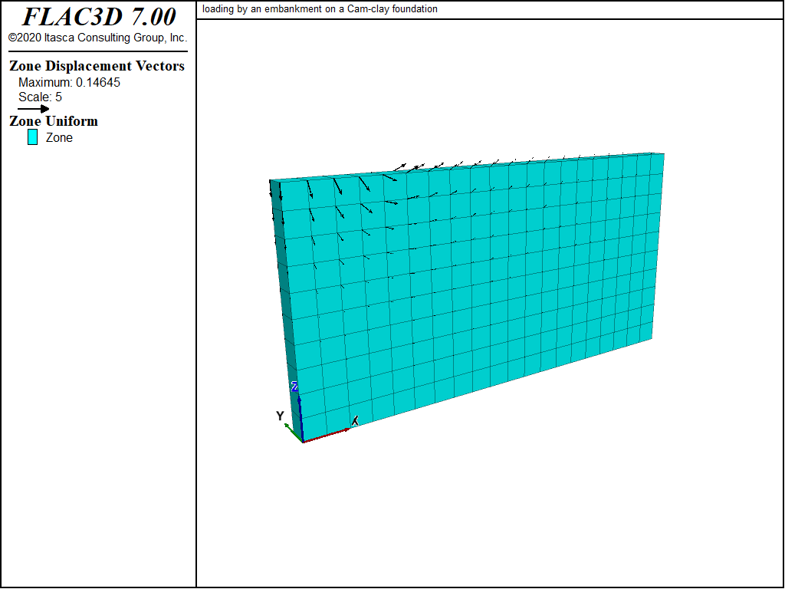
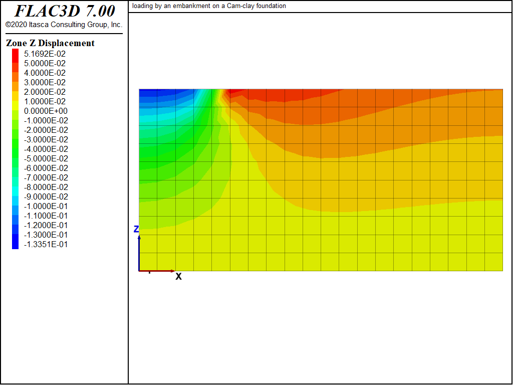
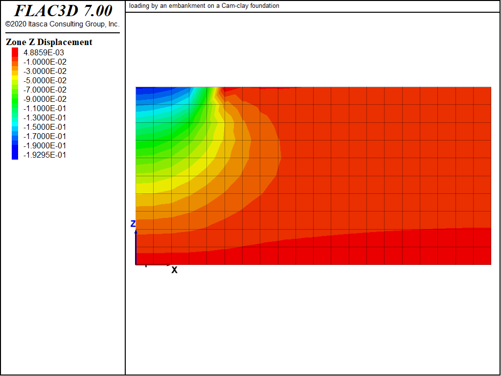
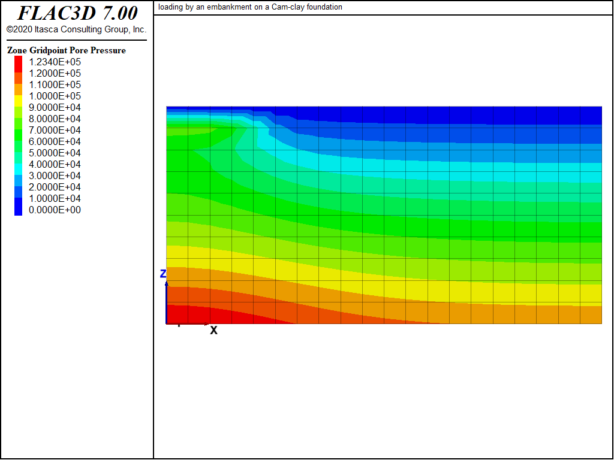
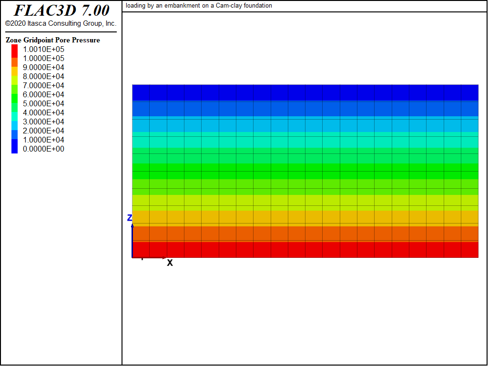
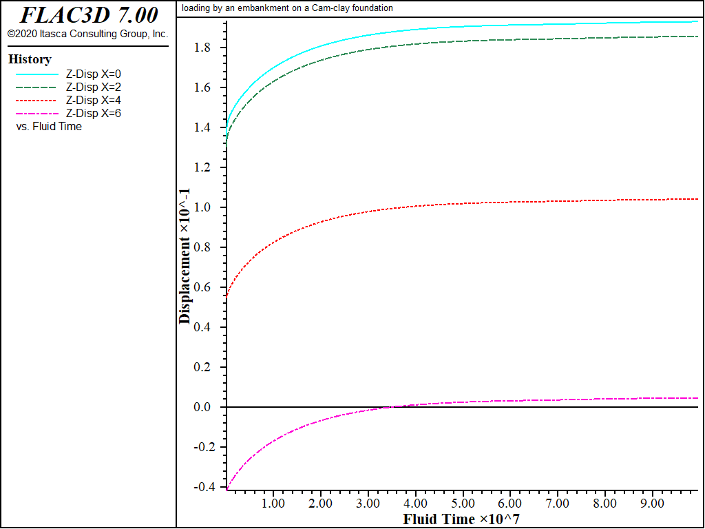
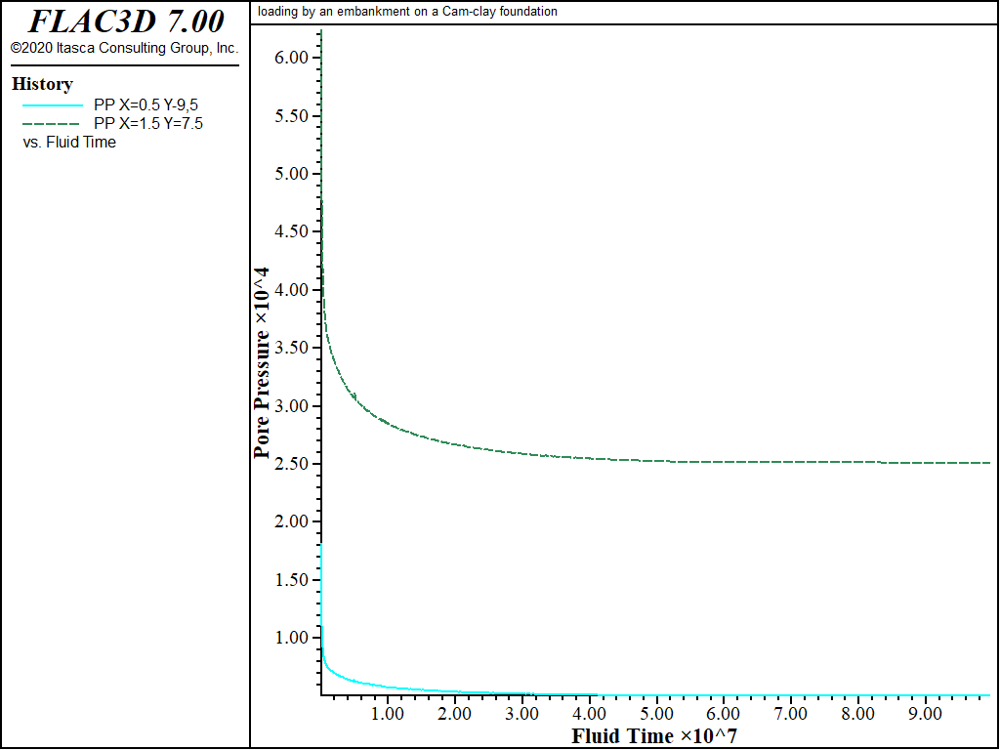

Cam-Clay 地基上的路堤加载
问题描述
注意
要在 FLAC3D 中查看此工程，请使用菜单命令 。选择“ExampleApplications/EmbankmentLoad”，再选择“EmbankmentLoad.f3dprj”即可加载。该工程的主数据文件（main data file）在本示例末尾给出。
本示例研究饱和土地基在长路堤加载下的响应。分析针对垂直于路堤轴线、厚度为单位厚度的地基切片进行。地基厚度为 10 m，地下水自由面位于地表。路堤宽 8 m。土体特性对应于 Cam-clay 材料。初始应力和孔隙压力状态对应于重力作用下的平衡状态，其水平有效应力与竖向有效应力之比为 6/13。路堤的重量通过施加超载来模拟，排水发生在地表处。
该土体具有若干性质，列于表 1（Table 1）。
| 排水泊松比（\(ν\)） | 0.3 |
| 土体常数（\(M\)） | 0.888 |
| 正常固结线斜率（\(λ\)） | 0.161 |
| 弹性回弹线斜率（\(κ\)） | 0.062 |
| 参考压力（\(p_1\)） | 100.0 Pa |
| 参考压力下的比容（\(v_λ\)） | 2.858 |
| porosity | 0.3 |
| 干密度（\(ρ\)） | 2 × 103 kg/m3 |
黏土为轻度超固结，本示例中帽盖压力的初始值 \(p_c\) 等于 1.6 × 105 Pa。（请注意，对于正常固结土，在黏土层底部 \(p_c\) 的值为 1.579 × 105 Pa，此处 \(p\) = 8.33 × 104 Pa、\(q\) = 7.0 × 104 Pa。）假定材料的排水泊松比在模拟过程中保持不变。
地基的渗透率 \(k\) 为 10-12 (m/s)/(Pa/m)。土的模量是平均有效压力和土体比容的函数，这些量在空间上变化，并在模拟过程中演化。然而，\(K + 4/3 G\) 的平均值保持在 106 Pa 量级，即比水的体积模量低两个数量级（\(K_w\) 为 2 × 108 Pa）。因此，本示例中扩散系数 \(c\) 由土体材料控制。其量级可由公式 \(c = k(K + 4/3 G)\) 估算，约为 10-6 m2/s。扩散过程的时间尺度可用 \(t_c\) = \(L\)2/\(c\) 估算，其中 \(L\) 为模型高度。取 \(L\) = 10 m，可得 \(t_c\) 约为三年。与该时间相比，路堤的填筑可视为瞬时完成。首先进行不排水分析，以评价路堤填筑后短期内地基的沉降；随后在允许地表排水后监测长期响应。
建模步骤
图 1（Figure 1） 所示的模型利用了半对称性。模型尺寸为宽 20 m、深 10 m。请注意，模型宽度未必大到足以准确代表范围很大的土层；该模型仅用于说明目的。力学边界条件为：分析平面两侧（\(y\) 方向）为滚动边界，对称线和模型远边界（\(x\) 方向）为滚动边界，模型底部在 \(x\)、\(y\) 和 \(z\) 方向为固定位移。黏土的最大体积模量（bulk-maximum）设为 5 × 106 Pa，该值约为黏土层底部实际体积模量（bulk）初始值的两倍。


图 1：模型几何。
模拟的第一阶段对应于系统的短期响应，此时假定不发生流动。指定命令 模型流体活动命令（model fluid active） 关闭（off）。路堤加载通过在模型顶部边界 4 m 的区段上逐步施加 50 kPa 的压力来模拟（以再现比例加载条件）。达到满荷载后，将模型循环计算至平衡。在该阶段，孔隙压力因体积变形而发展，但不会消散。
在第二阶段，通过执行命令 模型流体活动命令（model fluid active） 开启（on） 允许流体流动发展。随后水从模型顶部排出（该处孔隙压力固定为零），路堤下发生附加沉降。用于执行耦合模拟的 模型求解流体时间总（model solve fluid time-total） 命令需要一些参数来确定解的精度。若采用不同的性质或模型条件，这些参数可能需要调整。有关这些问题的讨论，请参见耦合流动与力学计算（Coupled Flow and Mechanical Calculations）。计算过程中监测应力、孔隙压力和竖向位移。本问题的数据文件列于本页末尾。
结果与讨论
不排水和排水数值模拟结束时的位移矢量、竖向位移云图和孔隙压力分布见图 2（Figure 2）至图 7（Figure 7）。在四个监测点记录的图 8（Figure 8）中的竖向位移时程表明，由于排水，路堤下的最大沉降由约 0.14 m 增大到 0.19 m。请注意，图 3（Figure 3）中的位移矢量和图 5（Figure 5）中的竖向位移云图对应于不排水与排水位移之和。
在图 9（Figure 9）中，两个监测点处孔隙压力的演化曲线证实，到排水模拟结束时已达到稳态流动。


图 2：位移矢量——不排水响应。



图 4：竖向位移云图——不排水响应。


图 5：竖向位移云图——排水模拟结束时。


图 6：孔隙压力云图——不排水响应。


图 7：孔隙压力云图——排水响应。


图 8：竖向位移时程——排水响应。


图 9：孔隙压力时程——排水响应。
数据文件
EmbankmentLoad.dat
;-----------------------------------------------------------
; 剑桥黏土地基上的路堤加载
;-----------------------------------------------------------
model new
model large-strain off
fish automatic-create off
model title "loading by an embankment on a Cam-clay foundation"
model config fluid
; -- 创建网格单元几何体
zone create brick point 0 (0,0,0) point 1 (20,0,0) point 2 (0,1,0) ...
point 3 (0,0,10) ...
size 20 1 10
zone face skin ; 命名模型边界
; --- 力学模型和属性 ---
zone cmodel assign modified-cam-clay
zone property poisson .3 bulk-maximum 5e6 density 2000
zone property ratio-critical-state 0.888 lambda 0.161 kappa 0.062
zone property pressure-preconsolidation 160e3 pressure-reference 1e3 ...
specific-volume-reference 2.858
; -- 流体模型和属性
zone fluid cmodel assign isotropic
zone fluid biot off
zone fluid property permeability 1e-12 porosity .3
zone gridpoint initialize fluid-modulus 2e8
zone gridpoint initialize fluid-tension -1e20
zone initialize fluid-density 1e3
; --- 初始条件 ---
model gravity 10
zone gridpoint initialize saturation 1
zone initialize-stresses ratio 0.7
zone gridpoint initialize pore-pressure 1e5 gradient (0,0,-1e4)
program call 'pressure-effective' suppress ; 用于初始化剑桥黏土模型
; 平均有效应力属性的 FISH 函数
[pressure_effective]
; --- 边界条件 ---
zone face apply velocity-normal 0 range group 'East' or 'West'
zone face apply velocity-normal 0 range group 'North' or 'South'
zone face apply velocity (0,0,0) range group 'Bottom'
zone face apply pore-pressure 0 range group 'Top'
zone face apply stress-normal=-5e4 servo ramp ratio local ...
range position-x 0 4 group 'Top'
; --- 设置 ---
model mechanical active on
model fluid active off
; --- 历程 ---
history interval 100
zone history name 'z0' displacement-z position (0,0,10)
zone history name 'z2' displacement-z position (2,0,10)
zone history name 'z4' displacement-z position (4,0,10)
zone history name 'z6' displacement-z position (6,0,10)
zone history name 'pp1' pore-pressure position (0.5,0.5,9.5)
zone history name 'pp2' pore-pressure position (1.5,0.5,7.5)
; --- 不排水响应 ---
model solve ratio-local 1e-4
model save 'undrained'
; --- 排水响应 ---
model fluid active on
model history name 'time' fluid time-total
model fluid substep 100
model mechanical substep 10
model mechanical slave
model solve time-total 1e5 or mechanical ratio 5e-5
model mechanical substep 50
model solve time-total 1.e8 or mechanical ratio 5e-5
model save 'drained'
| 这些内容对您有帮助吗？… | FLAC3D © 2019, Itasca | 原文更新于 2020 年 10 月 8 日 |